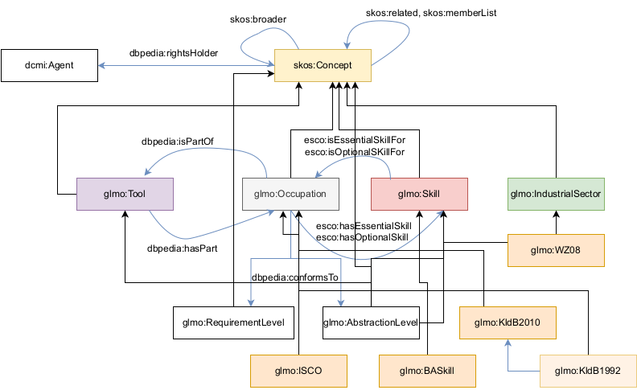

GLMO is our first step towards a generic German labor market ontology. GLMO explicitly represents both ISCO and KldB to provide a generic framework for further data integration and mapping. For this, GLMO is implemented as an extension of ESCO and Simple Knowledge Organisation System (SKOS). However, the key difference is a different scope and that we explicitly provide the mappings in one standardized format and provide further mappings and data, which are yet not available.
While ESCO describes three different domains (occupations; knowledge, skills and competences; qualifications), GLMO describes i) occupations, ii) skills, iii) tools and iv) industrial sectors. A fifth domain is added implicitly, the level of performance, which refers to both qualification and skill requirements for an occupation.
| Superclasses | skos:Concept |
| Subclasses | glmo:ISCO, glmo:KldB2010, glmo:KldB1992 |
| In domain of: | dbpedia:hasPart, esco:hasEssentialSkill, esco:hasOptionalSkill |
| In range of: | dbpedia:conformsTo |
| Description | This class represents an occupation. |
| Superclasses | glmo:Occupation |
| Subclasses | -- |
| In domain of: | dbpedia:hasPart, esco:hasEssentialSkill, esco:hasOptionalSkill |
| In range of: | dbpedia:conformsTo |
| Description | This class represents an ISCO occupation. |
| Superclasses | glmo:Occupation |
| Subclasses | -- |
| In domain of: | dbpedia:hasPart, esco:hasEssentialSkill, esco:hasOptionalSkill |
| In range of: | dbpedia:conformsTo |
| Description | This class represents an KldB2010 occupation. |
| Superclasses | glmo:Occupation |
| Subclasses | -- |
| In domain of: | dbpedia:hasPart, esco:hasEssentialSkill, esco:hasOptionalSkill |
| In range of: | dbpedia:conformsTo |
| Description | This class represents an KldB1992 occupation (currently not used). |
| Superclasses | skos:Concept |
| Subclasses | glmo:BASkill |
| In domain of: | esco:isEssentialSkillForl, esco:isOptionalSKillFor |
| In range of: | esco:hasEssentialSkill, esco:hasOptionalSkill |
| Description | This class represents a Skill. |
| Superclasses | glmo:Skill |
| Subclasses | -- |
| In domain of: | esco:isEssentialSkillForl, esco:isOptionalSKillFor |
| In range of: | esco:hasEssentialSkill, esco:hasOptionalSkill |
| Description | This class represents a Skill from the BA dataset. |
| Superclasses | skos:Concept |
| Subclasses | -- |
| In domain of: | dbped:isPartOf |
| In range of: | dbped:hasPart |
| Description | This class represents a tool. |
| Superclasses | skos:Concept |
| Subclasses | glmo:WZ08 |
| In domain of: | -- |
| In range of: | -- |
| Description | This class represents an industrial sector. |
| Superclasses | glmo:IndustrialSector |
| Subclasses | -- |
| In domain of: | -- |
| In range of: | -- |
| Description | This class represents an industrial sector according to WZ08. |